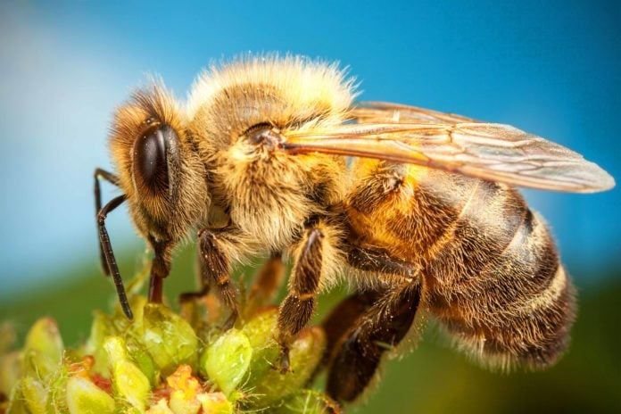
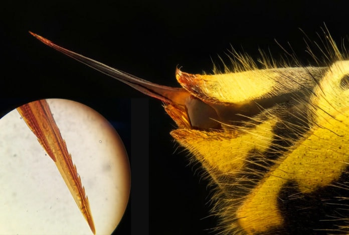

Описание и особенности
Пчела принадлежит к надсемейству жалящих летающих насекомых Apoidea. Ближе всего она к осам и муравьям. Во всем мире существует приблизительно 21 000 видов и 520 родов пчел.
Насекомые питаются пыльцой и нектаром. При этом пыльца служит для них источником полезных веществ (в частности белка), а нектар – энергией. Некоторые виды обладают наивысшей социальной организацией. Пчелы могут иметь разную внешность в зависимости от определенного вида. Но в среднем они отличаются размером около 3-х сантиметров и полосатым окрасом, в котором чередуются желто-оранжевый и черный цвета. Тело полностью покрыто волосками, которые служат защитой и выполняют функцию органов осязания. Отличительной особенностью пчелы является наличие хоботка для высасывания нектара и ощущения вкуса. А усики отвечают за обоняние, распознают тепло/холод/влажность. В качестве органов слуха выступают некоторые части тела и ноги.
Строение, как выглядит пчела

Пчела относится к категории членистоногих животных. Ее тело состоит из трех основных частей:
- головы
- грудной части
- брюшка
Также отличительной особенностью насекомых является наружный скелет, который представлен в виде защищающей твердой оболочки. К нему крепятся мускулы и внутренние органы.
Голова пчелы защищена слоем хитина. Помимо усиков, у нее есть верхняя губа и ротовой аппарат с хорошо развитыми мускулами. Это позволяет насекомым переносить мелкие предметы и прокусывать любые природные материалы.
Грудная часть состоит из нескольких отделов. Здесь расположены мышцы, с помощью которых пчела управляет крыльями. Также у нее три пары ног. Задние ноги больше всего покрыты волосками, на которых переносится пыльца. Передние ноги насекомые используют для личной гигиены.
В брюшке сосредоточены почти все внутренние органы. Оно состоит из нескольких сегментов, которые соединяются эластичной пленкой. На брюшке располагаются специальные железы (4 пары), которые выделяют воск.
Важнейшим органом пчелы является жало. Она использует его для обороны, но в случае потери продолжительность жизни насекомого сокращается до пары часов. Дело в том, что жало очень острое и имеет зазубрины, в отличие от осы. Атаковав противника, пчела пытается вытащить его и тем самым повреждает свои органы.
